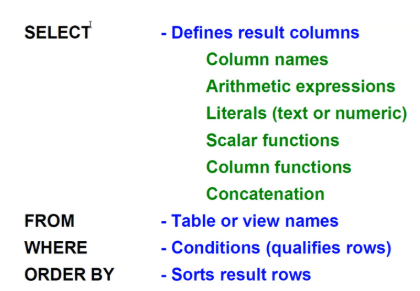

DB2 SQL:
- 1. Base de datos: es un conjunto de tablas relacionadas.
- 2. Tabla: es una colección de filas y columnas.
- 3. Fila: es un registro individual.
- 4. Columna: es un atributo de los datos.
- 5. Vista: es una consulta guardada como objeto de tabla virtual.
2. Tipos de datos:
- 1. Numéricos: SMALLINT, INTEGER y DECIMAL(m,n)
- 2. Alfanuméricos: CHAR(n) y VARCHAR(n)
- 3. Predefinidos: DATE //-- yyyymmdd --\\, TIME //-- hhmmss --\\ y TIMESTAMP //-- fecha y hora juntos --\\
3. Funciones predefinidas:
- 1. DAY(): establece el día.
- 2. MONTH(): establece el mes.
- 3. YEAR(): establece el año.
- 4. HOUR(): establece la hora.
4. Funciones de columna:
- 1. SUM(): suma.
- 2. AVG(): hace la media.
- 3. MIN(): saca el mínimo valor.
- 4. MAX(): saca el máximo valor.
5. Cláusulas importantes:
- 1. DISTINCT: elimina duplicados.
- 2. BETWEEN: entre dos.
- 3. IN: en algo.
- 4. LIKE: como algo.
- 5. IS NULL: es nulo.
- 6. IS NOT NULL: no es nulo.
- 7. ORDER BY: ordena resultados.
- 8. FETCH FIRST N ROWS ONLY: limita número de resultados.
Las bases de datos se almacenan en grupos de almacenamiento o ficheros VSAM LDS.
SQL es un lenguaje de consultas estructurado de datos.
Tipos de SQL utilizados para definir objetos o estructuras de datos en la base de datos (DDL):
- 1. create => usado para crear nuevas tablas, vistas o índices.
- 2. alter => usado para añadir, eliminar o modificar columnas y otras propiedades.
- 3. drop => usado para eliminar una columna o una tabla.
Tipos de SQL utilizados para manipular datos en la base de datos (DML):
- 1. select => usado para consultar datos de una tabla o tablas.
- 2. insert => usado para insertar datos de una tabla o tablas.
- 3. update => usado para actualizar datos de una tabla o tablas.
- 4. delete => usado para borrar o eliminar datos de una tabla o tablas.
Tipos de SQL utilizados para controlar datos en la base de datos (DCL):
- 1. grant => usado para conceder permisos a un usuario o grupo.
- 2. revoke => usado para revocar o quitar permisos que previamente se hayan concedido.
Si se cae la base de datos, se hace un Log para auditar y recuperar los datos.
Para poder meter datos en una base de datos del Mainframe es necesario crear previamente un grupo de almacenamiento basado en ficheros VSAM LDS. Después, crear la propia base de datos, dándole un nombre a elección. Luego, crear el espacio para las tablas, almacenadas en la base de datos. A continuación, crear el índice de la tabla. Y por último, la vista.
Estructura de una Query Select:

Fetch first five rows only => es otro campo para que muestre un nº determinado de filas en vez de todas las filas requeridas en los requisitos.
El ORDER BY puede ser ASC o DES.
Filtrar en WHERE con LIKE (NOT LIKE significa que no sea igual a su contenido):
La función coalesce(a,b) => es una función que sustituye el valor a por el b.
----------------------------------------------------------------------------------------------------------------------------
Ejercicios:Respuestas:
-
1. Falso => El orden de las cláusulas en una sentencia SELECT no es arbitrario,
ya que debe seguir una estructura específica para que SQL la entienda correctamente.
-
2. C => La cláusula BETWEEN hace que las filas de la tabla de resultados no se ordenen en absoluto.
-
3. SELECT y FROM.
-
4. Apóstrofes o comillas simples.
-
5. La palabra clave LIKE.
-
6. Verdadero.
----------------------------------------------------------------------------------------------------------------------------
Ejercicios:Respuestas:
-
1. Verdadero => Si no usas condiciones de JOIN, se llevarán a cabo productos cartesianos.
-
2. B => La instrucción se ejecuta y el resultado es el producto cartesiano de las tablas.
-
3. Para calificar el nombre de las columnas de una manera más sencilla, con nombres más cortos y sin ambigüedad.
----------------------------------------------------------------------------------------------------------------------------
Ejercicio ADMT:Respuestas:
-
1. Hay que poner “M” en la interfaz del ISPF > Poner 14 > Poner 7 > Escribir en CMD 1:-DISPLAY DATABASE(*) y darle a intro,
para mostrar todas las bases de datos. Si en la sentencia verde le añades “restricted”, es para mostrarlas en estado restrictivo,
pero como no hay ninguna en estado restrictivo, no hace falta añadir “restricted”.
-
2. Ahora escribir en el CMD 2: -DISPLAY DATABASE() SPACENAM(*) y darle a intro, para mostrar.
----------------------------------------------------------------------------------------------------------------------------
Hay dos tipos de funciones en SQL:
-
1. Funciones de columna => son aquéllas que devuelven un valor único que representa el resultado de una operación sobre múltiples filas.
Tipos: Sum(), Min(), Max(), Avg(), Count() y Count_Big().
Regla importante: Estas funciones sólo pueden estar en la 1º clausula y en la de HAVING.
-
2. Funciones escalares => son aquéllas que devuelven un valor escalar por cada fila de entrada.
Tipos: UPPER(), SUBSTR() y LENGTH().
Otras cláusulas de SQL:
-
1. HAVING => se encarga de calificar los grupos agrupados en GROUP BY. Va antes de esta cláusula última.
-
2. GROUP BY => se encarga de agrupar en grupos.
El cmd 1: muestra todas las bases de datos que hay sin estado restrictivo.
El cmd 2: muestra mi base de datos sin estado restrictivo.
El cmd 3: muestra todos los tablespaces de mi base de datos en estado restrictivo, pero no encuentra nada. Sin estado restrictivo sí encuentra.
El cmd 4: muestra todas las bases de datos que hay en estado restrictivo, pero no encuentra nada.
El cmd 5: muestra todas las utilidades que se hayan creado. En este caso, no se encontró ninguna.

En db2 de IBM Z se pueden unir dos queries con UNION ALL. Esto consiste en juntar todas las filas de ambos queries sin duplicados, pero con columnas del mismo formato.
La preparación y ejecución de un programa en db2, se lleva a cabo a partir de un “Bind plan” o Plan de enlace.
Para copiar contenido de una tabla a otra en db2, hay que irse al panel de bases de datos y poner count en la línea del select.
----------------------------------------------------------------------------------------------------------------------------
Ejercicios:Respuestas:
-
1. Falso => No puede ser arbitrario ya que debe cumplir una serie de reglas.
-
2. A => Cuando todas las filas duplicadas tienen que ser eliminadas.
-
3. Que las columnas de ambos queries deben tener el mismo formato y el mismo número de columnas.
Y además, el GROUP BY debe ir al final.
----------------------------------------------------------------------------------------------------------------------------
Ejercicios:Respuestas:
-
1. Verdadero.
-
2. B.
-
3. La palabra clave es IN.
----------------------------------------------------------------------------------------------------------------------------